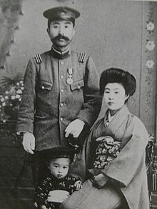

Japanese Writer Innovative Poet
More About Nakahara-senseiChūya Nakahara (中原 中也, Nakahara Chūya, 29 April 1907 – 22 October 1937), born Chūya Kashimura (柏村 中也, Kashimura Chūya), was a Japanese poet active during the early Shōwa period. Originally shaped by Dada and other forms of European (mainly French) experimental poetry, he was one of the leading renovators of Japanese poetry. Although he died at the young age of 30, he wrote more than 350 poems throughout his life. Many called him the "Japanese Rimbaud" for his affinities with the French poet whose poems he translated in 1934.
 Chūya Nakahara was born in Yamaguchi, where his father, Kensuke Kashimura, was a highly decorated army doctor. Kensuke married Fuku Nakahara and was adopted by the Nakahara family shortly after the birth of their son, officially changing their last name to Nakahara. In Nakahara's earliest years, his father was sent to Hiroshima and Kanazawa where the family followed, only returning to Yamaguchi in 1914. In 1917, Kensuke established his own clinic in the location where nowadays stands the Nakahara Chūya Memorial Hall.
Since his parents had not been blessed with children for six years after their marriage, and because they had no children in the Nakahara family's hometown, they were delighted with the birth of their first son and celebrated it for three days.
As the eldest son of a prominent doctor, Nakahara was expected to become one himself. Due to the high expectations of his father, Nakahara was given a very strict education, which also prevented him from enjoying an ordinary childhood. Worried about the public morals of the town, Kensuke forbid his son from playing outside with children from a different class to their own. Another example of these restrictions is that, unlike his younger brothers, he was not allowed to bathe in the river for fear that he would drown. As he grew up, severe punishments were inflicted upon him; a common one was being made to stand upright facing the wall. Any sudden move would cause to receive a burn in the heel with a cigarette ember. However, the biggest punishment was being confined to sleep in the barn, which Chūya received dozens of times compared to his brothers. This was intended to prepare him to follow Kensuke's footsteps and to become the head of the family.
His verse has been considered somewhat obscure, confessional and giving a general impression of pain and melancholy, emotions which were a constant throughout the poet's life.
Initially, Nakahara favored poetry in the Japanese traditional tanka format, but he was later (in his teens) attracted to the modern free verse styles advocated by Dadaist poet Takahashi Shinkichi and by Tominaga Tarō. After he moved to Tokyo, he met Kawakami Tetsutaro and Shōhei Ōoka, with whom he began publishing a poetry journal, Hakuchigun (Group of Idiots). He was befriended by the influential literary critic Kobayashi Hideo, who introduced him to the French symbolist poets Arthur Rimbaud and Paul Verlaine, whose poems he translated into Japanese. The influence of Rimbaud went beyond just his poetry, and Nakahara came to be known for his "bohemian" lifestyle.
Only one of his poetry anthologies, Yagi no Uta (山羊の歌, "Goat Songs", 1934) was published while he was alive (in a self-financed edition of two hundred copies). He had edited a second collection, Arishi Hi no Uta (在りし日の歌, "Songs of Bygone Days", 1938) just before his death. During his lifetime, Nakahara was not counted among the mainstream of poets. However, the emotional and lyrical nature of his verses have a wide and increasing following even to this day, especially among young people. Nakahara is now a subject of classroom study in Japanese schools, and his portrait in a hat with a vacant stare is well known. Kobayashi Hideo, to whom Nakahara entrusted the manuscript for Arishi Hi no Uta on his deathbed, was responsible for the posthumous promotion of his works. So was Ooka Shohei for collecting and editing The Complete Works of Nakahara Chūya, a collection containing the poet's uncollected poems, his journals, and many letters.